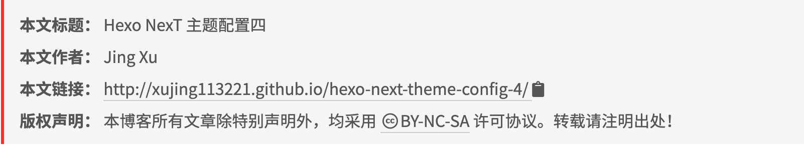

本文提到的Hexo博客配置是基于：Hexo v4.2.1 和 NexT v7.8.0。请注意版本之间存在差异！
本文主要介绍我在NexT主题配置中遇到的小问题，以及主题的进一步美化，深入Next代码进行个性化配置。
页脚设置
多级分类
修改博客字体
版权声明个性化设置
添加看板娘功能
解决不蒜子显示问题
页脚设置
Mist主题 页脚居中问题
解决方案：
themes/next/source/css/_schemes/Mist/_layout.styl 1 2 3 4 5 6 7 8 9 .footer-inner { - text-align: left; + text-align: center; +mobile() { text-align: center; width: auto; } }
不蒜子访客统计 个性化
这里就不弄了，等我学会了html，我在搞。 默认的就挺简洁好看的。
在 这个文件themes/next/layout/_third-party/statistics/busuanzi-counter.swig 修改就可以的实现个性化了.
多级分类
举例
1 2 3 4 categories: - [Diary, PlayStation]- [Diary, Games]- [Life]
这篇文章同时包括三个分类： PlayStation 和 Games 分别都是父分类 Diary 的子分类，同时 Life 是一个没有子分类的分类。
修改博客字体
在 Google Fonts 上找到心仪的字体，然后在主题配置文件中搜索font:为不同的应用场景配置字体：
themes\next\_config.yml 1 2 3 4 5 6 7 8 9 10 11 12 13 14 15 16 17 18 19 20 21 22 23 24 25 26 27 28 29 30 31 32 global: external: true family: Noto Sans SC size: title: external: true family: Cedarville Cursive size: headings: external: true family: Noto Serif SC size: posts: external: true family: codes: external: true family: Courier
版权声明个性化设置

先找到 themes/next/layout/_partials/post/post-copyright.swig 添加如下内容：
themes/next/layout/_partials/post/post-copyright.swig 1 2 3 4 5 6 7 8 9 10 11 12 13 14 15 16 17 18 19 20 21 22 23 24 25 26 27 28 29 30 31 32 33 34 35 36 37 38 39 40 41 42 43 44 45 46 47 48 49 50 51 <!-- JS库 clipboard 拷贝内容到粘贴板--> <script src="https://cdn.bootcss.com/clipboard.js/2.0.1/clipboard.min.js"></script> <!-- JS库 sweetalert 显示提示信息--> <script src="https://unpkg.com/sweetalert/dist/sweetalert.min.js"></script> <div> <ul class="post-copyright"> <li class="post-copyright-title"> <strong>{{ __('post.copyright.title') + __('symbol.colon') }} </strong> {{page.title}} // 只显示文章标题 <a href="{{page.permalink}}">{{page.title}}</a> // 显示带链接的文章标题 </li> <li class="post-copyright-author"> <strong>{{ __('post.copyright.author') + __('symbol.colon') }} </strong> {{- page.author or author }} </li> <!-- 引用链接 --> <li class="post-copyright-link"> <strong>{{ __('post.copyright.link') + __('symbol.colon') }}</strong> <a href="{{ post.url | default(post.permalink) }}" title="{{ post.title }}"> {{ post.url | default(post.permalink) }} </a> <span class="copy-path" title="点击复制引用链接"> <i style="cursor: pointer" class="fa fa-clipboard" data-clipboard-text="[{{ post.author | default(author) }}'s Blog | {{ post.title }}]({{ post.permalink }})" aria-label="{{ __('post.copy_success') }}"> </i> </span> </li> .... </ul> </div> .... <script> var clipboard = new ClipboardJS(".fa-clipboard"); clipboard.on("success", function(target) { var message = document.createElement("div"); message.innerHTML = '<i class="fa fa-check-circle message-icon"></i><span class="message-content">' + target.trigger.getAttribute("aria-label") + "</span>"; swal({ content: message, className: "copy-success-message", timer: 1000, button: false }); }); </script>
themes/next/languages/zh-CN.yml 1 2 3 4 5 6 7 + copy_success: 复制成功 copyright: + title: 本文标题 author: 本文作者 link: 本文链接 license_title: 版权声明 license_content: "本博客所有文章除特别声明外，均采用 %s 许可协议。转载请注明出处！"
找到themes/next/source/css/_common/components/post/post-copyright.styl 添加如下内容：
1 2 3 4 5 6 7 8 9 10 11 12 13 14 15 16 17 18 19 20 21 22 23 24 25 26 .swal-overlay { background-color : transparent; } .copy-success-message { box-shadow : 0px 4px 12px rgba (0 , 0 , 0 , 0.15 ); border-radius : 4px ; width : auto; margin : 16 x 0px ; vertical-align : top; } .copy-success-message .swal-content { margin : 0px 0px !important ; padding : 10px 16px ; line-height : 1em ; } .copy-success-message .message-icon { color : #52c41a ; margin-right : 8px ; } .copy-success-message .message-content { font-size : 14px ; }
添加看板娘功能
在站点根目录下执行以下命令安装依赖：
1 $ npm install --save hexo-helper-live2d
在站点配置文件中添加以下下配置项
_config.yml 1 2 3 4 5 6 7 8 9 10 11 12 13 14 15 16 17 18 19 20 21 22 23 24 25 26 27 28 29 30 31 32 live2d: enable: true pluginRootPath: live2dw/ pluginJsPath: lib/ pluginModelPath: assets/ Relative) scriptFrom: local tagMode: false log: false model: use: live2d-widget-model-z16 display: position: right width: 200 height: 360 mobile: show: false react: opacityDefault: 0.7 dialog: enable: true hitokoto: true
这个时候还不会有看板娘的显示，在 live2d-widget-models 手动下载喜欢的样式。
因为修改了站点配置文件，所以需要重启服务器才能预览模型效果。
这个功能挺好玩的，操作也简单。但是我还是喜欢简洁点的网页，哈哈哈哈。
文章评论功能
Next 主题中已经集成了widgetpack 的星级评分系统，用户无须再安装或引入插件脚本，只需在 widgetpack 中注册账号并修改主题配置即可，应用效果如下：
themes/next_config.yml 1 2 3 4 5 6 rating: enable: true id: color: fadb14
在widgetpack左边栏中找到Rating的Setting 修改Vote via为除了Social以外其他两种方式，就可以开启匿名评分了
解决不蒜子显示问题
下载busuanzi.pure.mini.js 到本地存储在文件夹themes/next/source/js/中
修改busuanzi.pure.mini.js 将b.style.display="none"中none去掉。
修改如下代码：
themes/next/layout/_third-party/statistics/busuanzi-counter.swig 1 2 3 4 {%- if theme.busuanzi_count.enable %} <div class="busuanzi-count"> - <script{{ pjax }} async src="https://busuanzi.ibruce.info/busuanzi/2.3/busuanzi.pure.mini.js"></script> + <script async src="/js/busuanzi.pure.mini.js"></script>
结束语
自此关于Hexo写博客的主题就告一段落了，我对Next主题配置差不多了。这是我第一次写博客，就是记录一下这个我开始使用Hexo写博客的过程，在此期间我看到了很多优秀的博客，给予了我很多帮助，我也借鉴了很多内容，希望我都备注上了。谢谢大家！
刚开始写博客，结构和内容有点乱，希望大家见谅，有什么问题希望大家给我写评论告诉我！后面我会慢慢写，写好每一篇博客！
后面我会写一下我学习和生活中的知识和经验，分享给大家，同时也给自己留下笔记，整理一下我的知识。希望未来越来越好！
参考文章